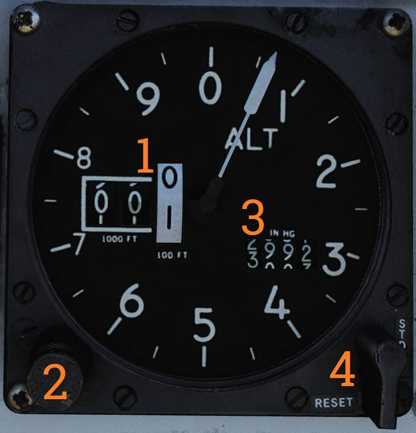

Left Instrument Panel
Radar Altimeter

Control and indicator for the radar altimeter.
Radar Altimeter Control Knob
The radar altimeter control knob (
Fully counterclockwise turns the radar altimeter off. Rotating clockwise sets the altitude warning level. Depressing the knob initiates radar altimeter BIT.
OFF Flag
The OFF flag (
Low Altitude Warning Light
The low altitude warning light (
Self-Test Light
The self-test light (
During BIT, the readout should display 100 feet ±10.
Low-Altitude Limit Index
The low-altitude limit index (
💡 Radio override does not disable the low-altitude warning tone.
Servopneumatic Altimeter

Control and indicator for the servopneumatic altimeter.
Altimeter Readout
The altimeter readout (
Baroset Knob
The baroset knob (
This setting only affects the local altimeter display. Other CADC-driven digital indicators use a fixed 29.92 in.Hg reference.
Mode Switch
The mode switch (
If power and CADC altitude data are present, the switch may be held in RESET for three seconds to enable normal (servoed) mode.
If set to STBY, or if power or CADC data is absent for more than three seconds, the altimeter switches to backup (pressure) mode.
STBY Flag
The STBY flag (
💡 At high speeds and below 10,000 feet, pressure effects can produce significant readout errors: up to 1,200 feet when transonic and up to 4,000 feet when supersonic.
Airspeed Mach Indicator

Indicated airspeed and Mach number display.
Airspeed Dial
The airspeed dial (
Indicated Airspeed Scale (Outer)
The outer indicated airspeed scale (
Indicated Airspeed Scale (Inner)
The inner indicated airspeed scale (
Mach Number Scale
The Mach number scale (
Indicated Airspeed Index Pointer
The indicated airspeed index pointer (
Mach Number Index Pointer
The Mach number index pointer (
Not visible in the image.
Safe Mach Number Index Pointer
The safe Mach number index pointer (
Not visible in the image.
Index Knob
The index knob (
One position adjusts the indicated airspeed index and the other adjusts the Mach number index.
Vertical Velocity Indicator

Displays vertical velocity in thousands of feet per minute.
Sudden or abrupt attitude changes can produce erroneous indications due to airflow changes over the static probe.
Left Engine Fuel Shutoff Handle

Emergency fuel shutoff handle for the left engine.
Pulling the handle shuts off fuel flow to the left engine. Pushing the handle in restores fuel flow.
This handle should not be used to normally secure the engine.
A left engine fire extinguishing button is located behind the handle and is accessible when the handle is pulled out.
Angle-of-Attack Indicator

Displays angle of attack (AOA) on a tape scale from 0 to 30 units.
This corresponds approximately to -10° to +40° rotation of the AOA probe.
Reference markers are provided on the right side for climb (5), cruise (8.5), and stall (29). A reference bar indicates on-speed approach (15).